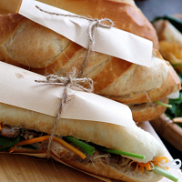
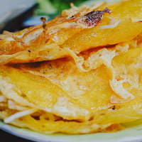
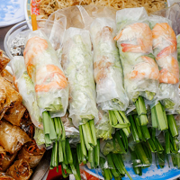
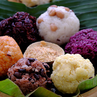

Vietnamese Cuisine
Vietnamese cuisine encompasses the foods and beverages of Vietnam, and features a combination of five fundamental tastes in overall meals. Each Vietnamese dish has a distinctive flavor which reflects one or more of these elements. Common ingredients include shrimp paste, fish sauce, bean sauce, rice, fresh herbs, fruit and vegetables. French cuisine has also had a major influence due to the French colonization of Vietnam. Vietnamese recipes use lemongrass, ginger, mint, Vietnamese mint, long coriander, Saigon cinnamon, bird's eye chili, lime, and Thai basil leaves.Traditional Vietnamese cooking is greatly admired for its fresh ingredients, minimal use of dairy and oil, complementary textures, and reliance on herbs and vegetables. It is also low in sugar and is almost always naturally gluten-free, as many of the dishes are made with rice noodles, rice papers and rice flour instead of wheat.
- 
BanhMi - 
BanhXeo - 
GoiCuon - 
Xoi